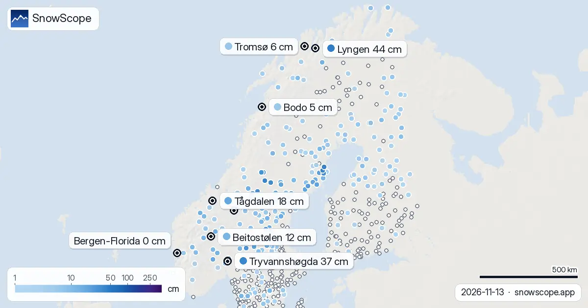
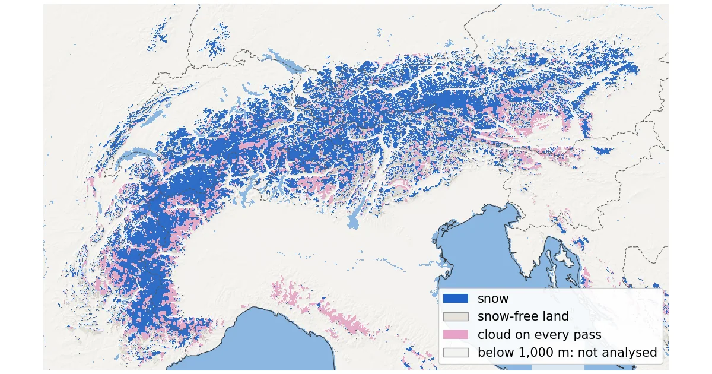
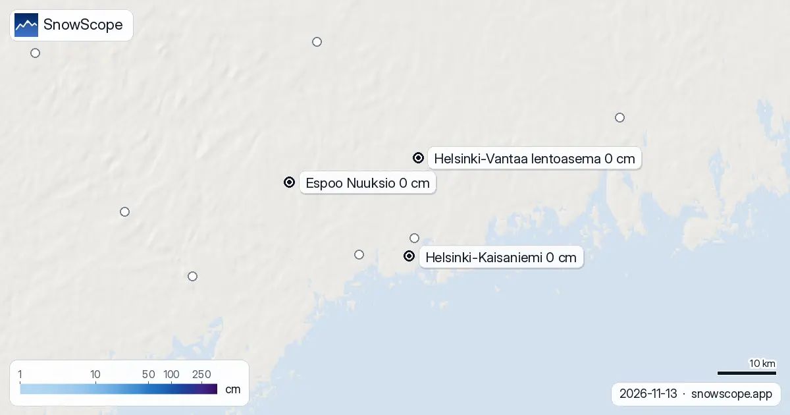
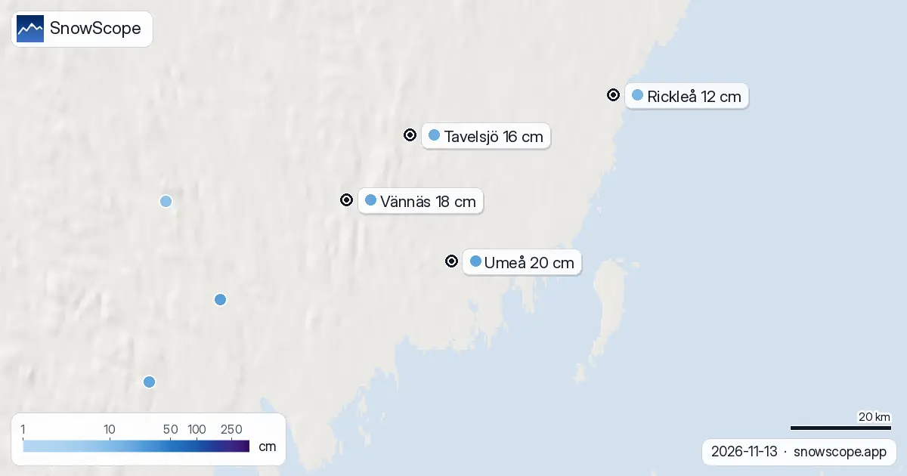
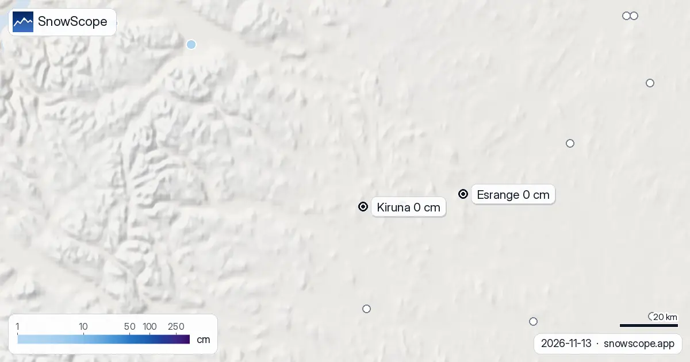
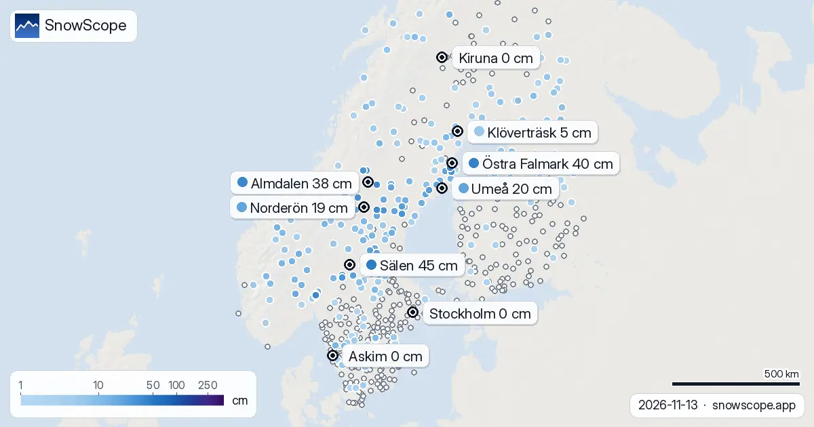

Snow reports · Guides
Daily snow reports for skiers: where the snow is, what is coming and where to ski, from the SnowScope snow map and measuring stations. Every number comes from that day's data.

Measured snow depth in Norway on 13 November 2026: 37 cm at Tryvannshøgda above Oslo, 44 cm at Lyngen in Troms, 10 to 18 cm in the inland valleys, bare ground in Bergen, Trondheim and inland Finnmark.

Alps snow cover by satellite, 4 to 13 November 2026, checked on the ground. NASA MODIS mapped snow down to about 1,200 m, but 555 snow stations show the ground mostly white only from about 1,750 to 2,000 m. Above 1,500 m MODIS saw 41,400 km² of snow. How the NDSI works and where it went wrong this week.

Helsinki snow depth on 13 November 2026: 0 cm at Kaisaniemi, Kumpula, Tapiola, Helsinki-Vantaa and Nuuksio. The usual first-snow date, and a weekend forecast that keeps the city grey.

Umeå measured 20 cm of snow on 13 November 2026, up from bare ground on Wednesday. How the stations around the city compare, why this is early, and whether it survives Monday's rain.

Kiruna snow depth on 13 November 2026: 0 cm at the town station, at Jukkasjärvi and at Esrange. In our 46-winter snow history the town always had snow on this date. What the weekend brings.

Measured snow depth across Sweden on 13 November 2026: 133 of 322 stations white, a belt from Dalarna to Västerbotten with up to 45 cm, a bare south and an almost bare far north around Kiruna.

Stockholm snow depth on 13 November 2026: 0 cm at Observatoriekullen and at every station around the city. When the snow usually arrives, and why this weekend will not bring it.

Deer Valley ski conditions on 13 November 2026: no real snow on the ground yet, about 4 in near the top from the weekend storm, rain on the low East Village side below about 6,700 to 7,600 ft, and 11 in up top over the week.

Measured snow depth in Oslo on 13 November 2026: 4 cm at Blindern, 31 cm at Bjørnholt and 37 cm at Tryvannshøgda. What a normal mid-November looks like, and what the weekend does to it.

Measured snow on the ground on 13 November 2026 in Oslo, Bergen, Trondheim, Tromsø, Stockholm, Göteborg, Östersund, Umeå, Luleå, Kiruna, Helsinki, Tampere, Oulu and Rovaniemi: from 20 cm in Umeå to bare ground in Kiruna.

Park City, Utah snowfall forecast for 13 November 2026: almost no snow on the ground right now, about 5 in near the summit from the weekend storm with a snow level of 7,400 to 7,700 ft, rain at the base, and about 12 in up top over the week.

Alpental snow forecast for 13 November 2026: about 1 in on the upper mountain, rain almost to the summit this weekend with a snow level near 5,400 to 5,600 ft, then 4 to 5 in of mixed rain and snow up top next week.

Bogus Basin snow check for Boise skiers on 13 November 2026: no snow on the ground yet, rain and mixed snow this weekend with a snow level near 6,300 to 6,800 ft, then colder air and about 8 in at the summit by next week.

The Sillian (Hochpustertal) ski map with our snow layer on 13 November 2026: 8.6 cm on the top at 2399 m, bare lower slopes, and a week of mixed rain and snow with the snow line near 1,800 to 2,000 m.

Silvretta Montafon snow conditions on 13 November 2026: 4.5 cm on the top at 2421 m, bare mid-mountain and valley, about 40 cm on the way up high this week while the valley gets rain below 1,500 m.

Lech Zürs snow report for 13 November 2026: about 6 cm at the top (2436 m) and at mid-mountain, bare in Lech at 1430 m. This week 42 cm up high on our forecast, up to 91 cm on others, rain and snow mixed around 1400 m. And why Lech is the snowy side of the Arlberg.

Snow depth in St Anton am Arlberg on 13 November 2026: about 1 cm at the top (2642 m), 5 cm at mid-mountain, bare in the village. This week 42 cm at the top and 33 cm mid-mountain, rain below about 1480 m. How deep is deep enough for the steep runs.

Obergurgl snow report for 13 November 2026: about 20 cm at the top (3024 m), 5 cm at mid-mountain, bare at the lowest lifts (1784 m). Snow forecast for the week: 34 cm up high, 21 cm low down, snow line near 1700 m. Plus the usual early season.

Snow depth in Sölden on 13 November 2026: about 9 cm at the top (3245 m), 5 cm at mid-mountain, none in the valley at 1346 m. 25 cm forecast up high this week, rain below about 1620 m. Glacier vs village, with 46 past winters.

Snowfall in Val Thorens, 13 November 2026: 27 cm fell at the top (3175 m) and 17 cm at 2498 m over seven days; snow depth is 50 cm and 8 cm. Next seven days: 86 cm at the top, 73 cm at 2498 m, snow line well below the village. Usual snowfall season from 46 winters.

Snow depth in Chamonix on 13 November 2026, height by height: nothing on the valley floor, 1 cm at 2001 m, 12 cm at the top of Brévent-Flégère (2486 m), 5 to 24 cm at the top of the Grands Montets (2768 m). About a metre forecast up high this week, rain in the valley. How deep Chamonix usually gets, from 46 winters.

Snow depth in Ischgl on 13 November 2026: about 5 cm at the top (2868 m), 4 cm at mid-mountain, none in the valley at 1352 m. Up to 42 cm on the ridge this week, rain in the Paznaun below about 1570 m. Plus valley and ridge over 46 past winters.

Les Menuires snow report for 13 November 2026: 28 cm at the top (2838 m), none lying at 2112 m or 1386 m. About 80 cm due at the top in seven days, snow line around 1500 to 1700 m. Why Val Thorens, 450 m higher up the same valley, already has more.

Tignes snow conditions on 13 November 2026: 42 cm at the top (3447 m), 12 cm at 2503 m, a bare valley at 1559 m, and 99 cm forecast at the top over seven days, with rain below about 1700 m. How it compares with 46 past winters.

Purgatory Resort (Durango, Colorado) ski report from our snow model: 3 in (7 cm) at the summit, bare base and mid-mountain, 4 to 7 in of new snow forecast in the next seven days, and what a usual Purgatory winter looks like.

La Rosière snow conditions on our 11 November model run: 24 cm at the top (2799 m), bare mid-mountain and village, and a seven-day forecast of 108 cm at the top and 61 cm at mid-mountain. The sunny side of the Petit-Saint-Bernard in numbers.

Snow at Alpe Devero (Ossola, Piedmont) on our model: 2 cm at the top (2201 m), bare below, 36 cm of new snow forecast at the top in the next seven days. The small car-free resort and its usual winter in numbers.

Les Arcs snow report from our model: 34 cm at the top (3205 m), 2 cm at mid-mountain, a bare base, and up to 69 cm of new snow forecast at the top in the next seven days. What Les Arcs usually has in November and December.

Méribel snow conditions from our model on 11 November: 24 cm at the top (2920 m), 1 cm at mid-mountain, a bare valley, and a forecast of 99 cm at the top and 58 cm at mid-mountain over the next seven days. The usual Méribel winter in numbers.

The Isola 2000 ski map with today's snow: 9 cm at the top, 7 cm at mid-mountain, 2 cm at the base after 31 cm in a week, how the Pelevos, Saint-Sauveur and Lombarde sectors are laid out, and what a usual winter brings.

No snow yet at Oukaïmeden: 0 cm at all three heights, nothing in the last seven days, nothing in the coming week. What a usual November brings to the High Atlas and when to aim for skiing.


We compared the snow on 10 November with each winter's deepest snow at 46 ski resorts over 46 winters. A snowy start helps, but less than many skiers think.

A storm on November 4 left 8 to 13 inches of new snow at five high Colorado stations near Aspen. Five days later, half of it was gone. What that means for powder days.

How long the Pyrenees stayed white each winter since 2000-01, seen by satellite, and snow depth at 10 long-running stations. Three thin winters in a row ended in 2025-26; this autumn has started normally.

A slope map of Les Grands Montets and seven other ski areas shows how much of the ground is steeper than 30°, 35° and 40°, and why that line matters for avalanches.

In 24 of 46 winters, resorts on the Italian and southern French side of the Alps had a relatively bigger winter than the northern side. The chart, the big years and the weather behind them.

Snow in December depends first on height. 46 past winters at 676 Alpine resorts show how much snow to expect on 1, 15 and 22 December, from below 1,200 m to above 2,400 m.

Whistler Blackcomb got 75 cm of new snow at the top in a week, then a warm storm with 124 mm of water. A simple guide to base, fresh snow, rain and crust.

A cheap 3-day Lake Como plan for December with real 2026-27 prices: trains, ferries, a funicular and a ski day at Piani di Bobbio or Madesimo, what you save compared with Cortina, and the chance of snow at Christmas.

Livigno's snow today, what the European seasonal forecast says about December, and why height beats a warm month at Christmas.

Snow today in Cortina, the European seasonal forecast for December and our chances of a white Christmas, mountain by mountain in the eastern Dolomites.

Where December 2026 looks snowier or leaner across the Dolomites, from Val Gardena to Cortina: the European seasonal forecast, our map and the chances of a white Christmas.

How much water the Atlas snow may hold in February 2027: the European seasonal forecast is about 3 °C warmer and wetter in the west and south, so snow odds stay low across Morocco's river basins.

The European seasonal forecast makes January 2027 about 2 °C warmer over the Atlas. Our outlook for snow depth, snow water and the water stored for Morocco's rivers.

Bou Iblane is still bare. The European seasonal forecast points to a clearly warmer December, and on every snowy part of the Middle Atlas our odds lean leaner.

Where December 2026 looks snowier or leaner from Montana to New Mexico: the European seasonal forecast and our map, mountain by mountain, with Colorado, Utah and the Northern Rockies.

Will the snowpack from the Écrins to the Maritime Alps and Piedmont fill as usual in December 2026? The European seasonal forecast and our map, mountain by mountain.

No snow yet at Oukaimeden. The European seasonal forecast sees a warmer December over the High Atlas, and our map shows leaner odds on almost every summit.

Snow today at the Grands Montets, the European seasonal forecast for December and our map of where December looks snowier or leaner around Mont Blanc.

Vail in numbers: a usual peak of about 64 in (162 cm) at mid-mountain over 46 past winters, March the deepest month, plus terrain, access and safety.

Zermatt in numbers: where the snow lasts, the safest months and how to reach the car-free village, from 46 past winters of snow data.

Steamboat, Colorado, for families: what works for toddlers, school-age kids, teens and parents, with the snow of 46 past winters at three heights.

Is Verbier good for beginners? When is the snow best? How do you get there? Answers from the 4 Vallées and 46 past winters of snow data.

How to spend a first day at Park City Mountain, Utah, and when to go: our snow history gives about 71 in (180 cm) at the usual mid-mountain peak over 46 past winters.

One picture, 100 mountain ranges in the Alps, the Pyrenees, the Atlas and North America: Canada leads with 89% snow cover, the Alps reach 45%, the Atlas and the US Northeast are still bare.

A walk-through of the Sella Ronda from Sëlva in Val Gardena: Gardena, Campolongo, Pordoi and Sella passes in order, with our snow history of 46 past winters.

Mt Baker, Washington: about 133 in (337 cm) at the usual peak at mid-mountain in 46 past winters, a world snowfall record, no lodging on the hill, and what that means.

Val d'Isère and the Espace Killy for beginners, improvers and experts, with the snow of 46 past winters at three heights.

Plan Mammoth Mountain by season: about 93 in (235 cm) at the usual peak at mid-mountain over 46 past winters, March deepest, long springs, and winters that swing.

Kitzbühel is famous and low. What 46 past winters say about snow at 762 m, 1,377 m and 1,993 m, how it has changed, and which weeks are the safer bet.

Jackson Hole myths checked against facts and our snow history: about 80 in (204 cm) at the usual peak at mid-mountain over 46 past winters, and no clear decline there.
We compared the SnowScope snow depth map with 2,012 measuring stations: RMSE 7.7 cm, bias -0.5 cm, snow or no snow right 88 % of the time. What works, what doesn't yet, and what we improve next.

Ten practical points for a ski trip to Livigno: the roads in, the cold, the duty-free shops, the two ski sides and when the snow is best, from 46 past winters of our snow history.

Getting to Telluride in winter, airport by airport: Telluride Regional, Montrose, the drive on Highway 145 with the Colorado traction law, and the free gondola to Mountain Village.

How a snow day at Whitewater near Nelson usually unfolds, from the early forecast check to the last run, with the snow of 46 past winters at three heights.

Arc 1600, 1800, 1950 and 2000 compared for snow, slopes and access, with 46 past winters of our snow history at three heights of Les Arcs.

Getting to Snowbird in winter: one canyon road (SR-210), Utah's traction law, the UTA ski bus and the drive from Salt Lake City airport.

Whistler Blackcomb for every level, with our snow history: about 370 cm at the usual peak at mid-mountain over 46 past winters, March and April the deepest months.

From Walser farmers to the White Ring: the dates that made Lech Zürs, followed by our snow record then and now, the first fifteen of 46 past winters against the last fifteen.

Driving to Palisades Tahoe in winter: distances from Reno, California chain controls R-1 to R-3, weekend parking reservations, free TART buses.

A practical kit list for Stowe, Vermont: layers, face cover, goggles, sharp edges and hand warmers, tied to the snow of 46 past winters on Mount Mansfield.

Skiing Lake Louise early in the season: why it starts early, what November and December snow usually looks like in 46 past winters, and how to ski thin early cover.

What is true about La Grave, the off-piste mountain under La Meije: terrain, safety, snow by month and the trend, from 46 past winters.

Big Sky, Montana, made easy to picture: 5,850 acres under Lone Peak, and snow that is about five times deeper near the top than at the base in 46 past winters.

Andorra has no big airport: how to reach Grandvalira from Barcelona or Toulouse, the Envalira tunnel, the CG2 road and the free and paid car parks.

Magic Mountain in Londonderry, Vermont: an independent hill with steep glades, an old red chairlift and thin natural snow. Five things to know, with the snow of 46 past winters.

Ski Revelstoke's whole vertical in your head first: the snow at the summit, mid-mountain and the valley base in 46 past winters, and when each part is at its best.

Seven days in the Silvretta Arena, one at a time: where the snow is, when to cross to Samnaun, and what 46 past winters say about Ischgl's snow at three heights.

Aspen Snowmass compared: Snowmass has about 75 in (190 cm) at the usual peak at mid-mountain over 46 past winters, Aspen Mountain about 69 in (174 cm). Terrain, access, safety.

Gourette and Cauterets side by side: heights, usual snow by month, the best weeks and how to get there, from 46 past winters.

Mad River Glen, Vermont: natural snow, about 30 in (75 cm) at the usual peak at mid-mountain over 46 past winters, February deepest. Three ways to plan a day there.

Banff Sunshine Village month by month: about 100 cm at mid-mountain in a usual March over 46 past winters, April deepest near the top, and a season into late May.

Saas-Fee is car-free: train to Visp and PostBus 511, the drive through the Rhône valley and the car trains, the car parks and the free buses.

About 109 in (276 cm) is Alta's usual peak at mid-mountain over 46 past winters. Here: why snowboards stay home, the best months and how to get up the canyon.

Alpe d'Huez faces the sun. How to plan a day by the clock and by height, with the snow of 46 past winters from the low villages to Pic Blanc.

Our 46-winter Alps record at 108 points from 667 to 3,872 m: snow days down at all of them, clearly at 81 %. What changed at each height, and why.
At the height of Oukaïmeden our 46-winter record shows 12 % fewer snow days; lower down the signal is lost in huge year-to-year swings. What we know.

Baqueira-Beret sits in the Val d'Aran, on the Atlantic side of the Pyrenees. What that means for its snow, tested with 46 past winters against La Molina, and when to go.

A portrait of Bonneval-sur-Arc in Haute-Maurienne: stone roofs, a closed pass, a small ski area and surprisingly deep snow, from 46 past winters of our snow history.

How to spend a first day skiing in Chamonix, from the Grands Montets above Argentière to the right hour for each slope, with 46 winters of snow data.

Cortina d'Ampezzo three ways: Tofana, Faloria-Cristallo and Cinque Torri-Lagazuoi, with 46 winters of snow data at three heights.

Chantarella, Marguns, Piz Nair, White Turf: the words you hear in St. Moritz, explained, and what 46 past winters of our snow history say about each height of Corviglia.

Davos and Klosters share six ski mountains. A day-by-day plan, starting on Parsenn, with what 46 past winters of our snow history say about its heights.

When to book Courchevel and the 3 Vallées, which village to stay in and where the snow lasts, planned from 46 past winters of snow data.

St Anton and Ski Arlberg through the winter: how deep the snow usually is each month at three heights, from 46 past winters.

A year of snow in Sölden, phase by phase: when the glaciers whiten, the World Cup weekend, the long middle of winter and the spring weeks, from 46 past winters at three heights.

Fewer snow days at all 120 points we studied in the Pyrenees since 1980-81, most below 1,500 m: our 46-winter record and the research behind it.

A practical notebook on Oukaïmeden in the High Atlas: when snow usually comes, how much, which slopes to aim for and how to get there from Marrakesh.

How to spend one good day at Luz-Ardiden, a small ski area above Luz-Saint-Sauveur in the Hautes-Pyrénées: the road, the two sectors, the snow of 46 past winters and which weeks to choose.

Michlifen, near Ifrane, has snow in short episodes rather than a season. What 46 past winters show, why the usual depth is zero, and how to be there on the right days.

Three ways to spend a day from Méribel: east to Courchevel, south towards Val Thorens, or at home on Mont Vallon, with the snow of 46 past winters at three heights.